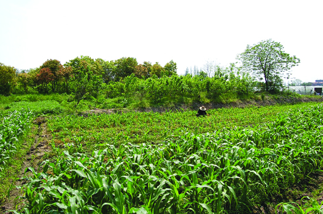

嘉兴市文物保护网 · 市级文物保护单位 · 2014-06-13 · 原文

高地遗址位于嘉兴市南湖区大桥镇胥山村30组，占地面积4000平方米，地势较高，土墩高1米。遗址东侧在地改田中曾出土大量新石器时代良渚文化陶片及青铜剑一把，地面散落陶片甚多。1983年二普时采集到印纹陶片及石斧钺等，可判定是新石器时代良渚文化至春秋战国时期的遗址。该遗址分布范围较大，延续时间较长，文化遗迹较丰富，有较高的历史和科学价值。1992年公布为嘉兴市级文物保护单位。